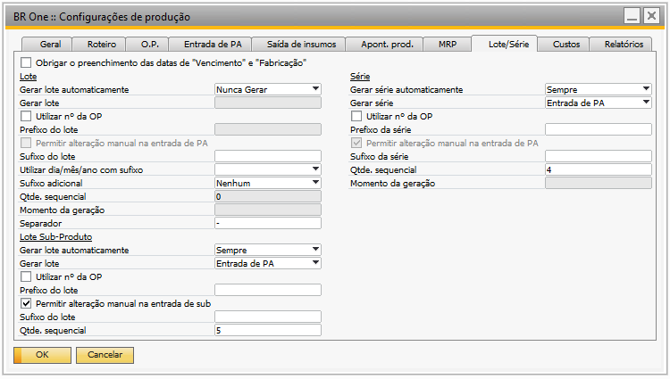
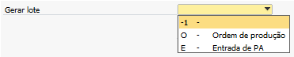
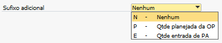
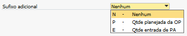
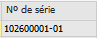
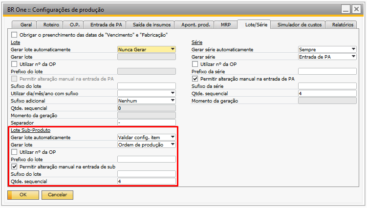
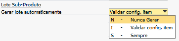
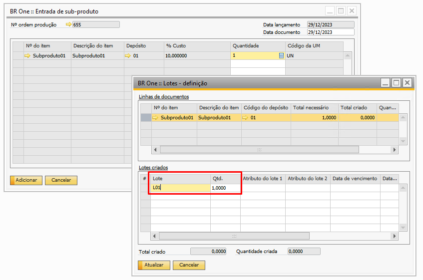
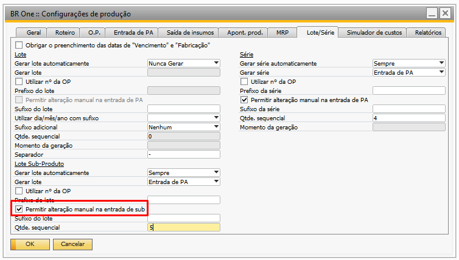
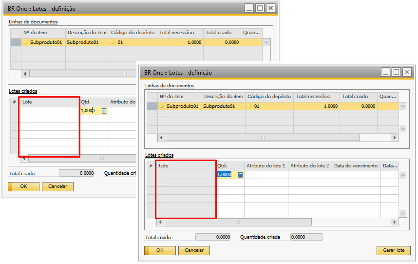

Configurações de Produção - Aba Lote/Série
Para acessar as Configurações de produção é necessário ir no menu:
Administração -> Definição -> Produção -> Configurações de produção
Na aba Lote/Série da tela de Configuração de produção é possível configurar a definição automática dos números de lotes e números de séries dos itens que serão realizados as entradas no estoque.
{kind=link}
Quando a base for multi-filial, o campo “N° do Lote/Série” na ordem de produção será exibido abaixo do campo “Data de vencimento”.

Obrigar o preenchimento das datas de “Vencimento” e “Fabricação”
O parâmetro “Obrigar o preenchimento das datas de “Vencimento” e “Fabricação””, obriga o usuário a preencher a data de vencimento ao tentar adicionar uma entrada de produto acabado.

Caso** esse flag esteja marcado ao tentar adicionar uma “Entrada de PA” com um item lote/série (PA ou sub-produto) sem informar a “Data de vencimento” ou a “Data de fabricação”, a seguinte mensagem será exibida:

BR One :: Não é possível continuar a inserção sem o preenchimento dos campos “Datas de vencimento” e “Datas de fabricação”.

Configuração de Produção – Lote
Na seção “Lote” é possível configurar os parâmetros de geração automática do número de lote para os itens que sejam administrados por lote.

Gerar lote automaticamente
O campo “Gerar lote automaticamente” define se o lote nunca será gerado, se a configuração do item deve ser validada ou se sempre será gerado, para determinar o que ocorrerá, há 3 opções selecionáveis:
Nunca Gerar:
Quando essa opção estiver marcada, o lote nunca será gerado automaticamente, sempre será exibida a tela de definição de lotes para o lote ser criado manualmente.

Validar config. item:
Quando essa opção estiver marcada, será validado o campo “Gerar lote automático” do cadastro do produto acabado da ordem de produção.

Há 3 tipos de opções para o campo:
Não: Se esta opção estiver selecionada, não será gerado o lote automático.
Sempre: Com essa opção marcada para o item, sempre será gerado lote automaticamente.
Validar depósito: Com essa opção marcada, o depósito da OP será validado, verificando se ele possui a flag “BR One Produção - Gerar lote automaticamente” marcada, caso esteja, o lote será gerado automaticamente. Se não, o lote deverá ser gerado manualmente.

Gerar lote
Neste parâmetro é possível determinar o momento da geração automática do número de lote, que pode ser pela “Ordem de produção” ou na “Entrada de PA”.

Esse campo ficará ativo quando as opções “Validar config. item” e “Sempre” estiverem selecionadas no campo “Gerar lote automaticamente”.Com o campo “Gerar lote” habilitado, não é possível atualizar a tela sem ter preenchido o ele. A seguinte mensagem será exibida caso o usuário tente atualizar a tela sem ter uma opção selecionada:
{kind=link}
BR One :: Caso esteja configurado para gerar lote automaticamente é necessário informar um valor para o campo “Gerar Lote”.
Conforme salientado acima, existem duas opções de configuração para o parâmetro “Gerar lote”:
{kind=link}
Ordem de produção:
Com essa opção selecionada, ao inserir uma OP como PA controlado por Lote, o número de lote será criado automaticamente e exibido no campo “Nº do Lote”. Na Ordem de produção, o campo “Nº do Lote” ficará visível apenas para gerar lote do tipo Ordem de produção. Esse campo conterá o número do lote criado automaticamente.

Entrada de PA:
Com essa opção selecionada, o número de lote será criado automaticamente apenas ao realizar uma “Entrada de Produto Acabado” para a OP com PA controlado por lote. Mas, é necessário clicar no botão “Gerar Lote” da tela “Lotes – definição” para o lote ser gerado automaticamente.

Utilizar nº da OP
Em ambos exemplos acima foi utilizado na geração automática do número de lote o parâmetro “Utilizar nº da OP”, que quando marcado considera na geração automática do número de lote o número da ordem de produção.

Com isso, por exemplo, se a OP for número 20, o lote gerado será o 20-0001, ou seja, o nº da OP + -0001. Se a flag estiver desmarcada, o lote será gerado apenas com o sequencial 0001.
Se houver mais de uma entrada de PA para a mesma OP, o lote será gerado sequencialmente, apenas incrementando +1 no último lote gerado. Exemplo, se for feita 3 entradas de PA diferentes com quantidade 1 cada, os lotes gerados serão 0001, 0002 e 0003. Se for feita outra entrada posteriormente, será somado +1 ao último lote gerado, e assim por diante.
Prefixo do lote
Esse campo é opcional, podendo ou não ser preenchido. Nele pode ser colocado o prefixo do lote que será gerado. Quando o campo “Gerar lote” estiver como “Ordem de produção”, o lote será criado com o prefixo + nº da OP.

Por exemplo, se nesse campo tiver o prefixo OP, o lote será criado como OP + nº da ordem de produção:

Se não houver prefixo, apenas será criado com o nº da ordem de produção:

Quando o parâmetro “Gerar lote” estiver como “Entrada de PA”, os lotes poderão ser gerados de quatro tipos diferentes:
Com prefixo e sem a flag “Utilizar n° da OP” marcado igual a:

Prefixo + sequencial (-0001)
Com prefixo e com a flag “Utilizar n° da OP” marcado igual a:

Prefixo + nº da OP + sequencial (-0001)
Sem prefixo e sem a flag “Utilizar n° da OP” marcado igual a:

Sequencial (-0001)
Sem prefixo e com a flag “Utilizar n° da OP” marcado igual a:
{kind=link}
nº da OP + sequencial (-0001)
Permitir alteração manual na entrada de PA
Este parâmetro permite realizar a alteração manual do número de lote na entrada de produto acabado.

Com o parâmetro “Permitir alteração manual na entrada de PA” marcado, é possível alterar o número de lote criado na entrada de PA, a coluna “Lote” ficará desbloqueada. Com a flag desmarcada, a coluna “Lote” permanecerá bloqueada e não será possível alterar o lote.

Sufixo de lote
Esse parâmetro é opcional, quando marcado, ele permite configurar um sufixo para o número de lote gerado automaticamente.

Quando o parâmetro “Gerar lote” estiver como “Ordem de produção”, o número de lote será gerado com o nº da OP + sequencial + sufixo. Por exemplo, se o sufixo configurado for igual a “/23”, o número de lote será criado como nº OP + sequencial + /23:

Se não houver nº da OP, apenas será criado com o sequencial + sufixo:

Quando o “Gerar lote” estiver como “Entrada de PA”, os lotes poderão ser gerados com o sufixo preenchido ou não:
Com sufixo igual a “/23”:
{kind=link}
Nº da OP + sequencial por OP + sufixo
Sem sufixo igual a vazio:
{kind=link}
Nº da OP + sequencial por OP
A opção de “Prefixo do lote” também está disponível para utilização em conjunto com o sufixo, para Ordem de produção e Entrada de PA.
Utilizar dia/mês/ano com sufixo
Esse parâmetro é opcional, quando marcado, ele permite configurar um sufixo utilizando as informações de dia, mês e ano para o número de lote gerado automaticamente. Com este parâmetro marcado, parâmetro “Sufixo de lote” fica bloqueado, pois, ele serve como substituto ao mesmo.

Existem seis opções de configuração para o parâmetro “Utilizar dia/mês/ano com sufixo”, segue abaixo:

N (Nenhum):
Quando o parâmetro está configurado como “N”, o número de lote gerado automaticamente não utiliza o parâmetro “Utilizar dia/mês/ano com sufixo” e também deixa o parâmetro “Sufixo de lote” liberado para configuração.
Dia (DD):
Quando o parâmetro está configurado como “DD”, indica que o número de lote gerado automaticamente irá considerar no sufixo o dia de criação do lote, considerando os 2 dígitos do dia, por exemplo “L01-20”.
Mês (MM):
Quando o parâmetro está configurado como “MM”, indica que o número de lote gerado automaticamente irá considerar no sufixo o mês de criação do lote, considerando os 2 dígitos do mês, por exemplo “L01-12”.
Ano (AAAA):
Quando o parâmetro está configurado como “AAAA”, indica que o número de lote gerado automaticamente irá considerar no sufixo o ano de criação do lote, considerando os 4 dígitos do ano, por exemplo “L01-2023”.
Ano (AA):
Quando o parâmetro está configurado como “AA”, indica que o número de lote gerado automaticamente irá considerar no sufixo o ano de criação do lote, considerando apenas os 2 últimos dígitos do ano, por exemplo “L01-23”.
Data (DDMMAAAA):
Quando o parâmetro está configurado como “DDMMAAAA”, indica que o número de lote gerado automaticamente irá considerar no sufixo a data completa de criação do lote, por exemplo “L01-20122023”.
Sufixo adicional
Esse parâmetro é opcional, ele permite configurar um sufixo adicional utilizando as informações “Nenhum”, “Qtde Planejada da OP” e “Qtde entrada de PA” para o número de lote gerado automaticamente.
 

{kind=link}
Qtde. Sequencial
Esse parâmetro define a quantidade de caracteres que serão utilizados para montar o sequencial do lote.

A quantidade de caracteres não pode ser menor que 1 e nem maior que 5. Caso o valor informado não atenda esses requisitos, a seguinte mensagem será exibida:

BR One :: A quantidade definida do sequencial [Lote] não pode ser maior que 5.
A quantidade de caracteres também define como será montado o lote na Ordem de Produção. Se a quantidade de caracteres for igual a 0, a flag “Utilizar n° da OP” deve estar marcada. Caso contrário, a seguinte mensagem será exibida:

BR One :: Se a quantidade de caracteres for 0 e o campo ‘Utilizar n° da OP’ estiver desmarcado, as configurações não serão atualizadas
Também foi criada uma validação para a quantidade de caracteres, apenas se a criação for pelo processo de Ordem de Produção. A quantidade mínima de caracteres que podem ser informados é 4, então, qualquer valor entre 1 e 3 não poderá ser utilizado como quantidade de caracteres válida, conforme mensagem:

BR One :: Caso esteja selecionada como geração na OP [Lote] e a quantidade de caracteres possua valor, a quantidade de caracteres não pode ser menor que 4.
Se o documento onde será gerado o lote for Entrada de produto acabado, o valor da quantidade de caracteres deverá ser maior que 0. Caso isso não ocorra, as configurações não serão atualizadas e a seguinte mensagem de erro será exibida:
BR One :: A quantidade definida do sequencial deve ser maior que 0.
Momento da geração
Ao definir que a geração de lotes será realizada na Ordem de Produção, deverá ser definido em qual momento o número de lote será gerado. Existem duas opções para seleção: “Criação” e “Liberação”.

Se o momento de geração definido for “Criação”, assim que a Ordem de Produção for adicionada, o lote será gerado.

Já se o momento definido for “Liberação”, assim que o status da Ordem de Produção for alterado para “Liberada”, será gerado o lote.

Caso o usuário esteja com o parâmetro “Gerar série” como “Ordem de Produção” e deixe o campo “Momento da geração” em branco, a seguinte mensagem de erro será exibida:
{kind=link}
BR One :: Caso esteja configurado para gerar lote na OP é necessário informar um valor para o campo ‘Momento da geração’.
Separador:
Os separadores são usados entre o depósito e os códigos de subnível do depósito1. Por padrão, o separador do código de posição no depósito.
Isso permite que você organize e gerencie seus depósitos de maneira mais eficiente, facilitando a localização e o rastreamento de itens em diferentes áreas do seu depósito.
Configuração de Produção – Série
Na seção “Série” é possível configurar os parâmetros de geração automática do número de série para os itens que sejam administrados por série.

Gerar série automaticamente
O campo “Gerar série automaticamente” define se a série nunca será gerado, se a configuração do item deve ser validada ou se sempre será gerado, para determinar o que ocorrerá, há 3 opções selecionáveis:
Nunca Gerar:
Quando essa opção estiver marcada, a série nunca será gerada automaticamente, sempre será exibida a tela de definição de séries para a série ser criada manualmente.

Validar config. item:
Quando essa opção estiver marcada, será validado o campo “Gerar série automático” do cadastro do produto acabado da ordem de produção.

Há 3 tipos de opções para o campo:
Não: Se esta opção estiver selecionada, não será gerado a série automática.
Sempre: Com essa opção marcada para o item, sempre será gerado a série automaticamente.
Validar depósito: Com essa opção marcada, o depósito da OP será validado, verificando se ele possui a flag “BR One Produção - Gerar série automaticamente” marcada, caso esteja, a série será gerada automaticamente. Se não, a série deverá ser gerada manualmente.

Gerar série
Neste parâmetro é possível determinar o momento da geração automática do número de série, que pode ser pela “Ordem de produção” ou na “Entrada de PA”.

Esse campo ficará ativo quando as opções “Validar config. item” e “Sempre” estiverem selecionadas no campo “Gerar série automaticamente”.Com o campo “Gerar série” habilitado, não é possível atualizar a tela sem ter preenchido ele. A seguinte mensagem será exibida caso o usuário tente atualizar a tela sem ter uma opção selecionada:

BR One :: Caso esteja configurado para gerar série automaticamente é necessário informar um valor para o campo “Gerar Série”.
Conforme salientado acima, existem duas opções de configuração para o parâmetro “Gerar série”:

Ordem de produção:
Com essa opção selecionada, ao inserir uma OP com o PA controlado por Série, o número de série será criado automaticamente e exibido no campo “Nº do Série”. Na Ordem de produção, o campo “Nº do Série” ficará visível apenas para gerar série do tipo Ordem de produção. Esse campo conterá o número da série criada automaticamente.

Entrada de PA:
Com essa opção selecionada, o número de série será criado automaticamente apenas ao realizar uma “Entrada de Produto Acabado” para a OP com PA controlado por série. Mas, é necessário clicar no botão “Gerar Série” da tela “Nºs de Série – definição” para a série ser gerado automaticamente.

Utilizar nº da OP
Na geração aut5omática do número de série o parâmetro “Utilizar nº da OP”, que quando marcado considera na geração automática do número de série o número da ordem de produção.

Com isso, por exemplo, se a OP for número 20, a série gerada será o 20-00001, ou seja, o nº da OP + -00001. Se a flag estiver desmarcada, a série será gerada apenas com o sequencial 00001.
Se houver mais de uma entrada de PA para a mesma OP, a série será gerado sequencialmente, apenas incrementando +1 no último série gerado. Exemplo, se for feita 3 entradas de PA diferentes com quantidade 1 cada, as séries geradas serão 0001, 0002 e 0003. Se for feita outra entrada posteriormente, será somado +1 ao último série gerado, e assim por diante.
Prefixo da série
Esse campo é opcional, podendo ou não ser preenchido. Nele pode ser colocado o prefixo da série que será gerado. Quando o campo “Gerar série” estiver como “Ordem de produção”, a série será criada com o prefixo + nº da OP.

Por exemplo, se nesse campo tiver o prefixo OP, a série será criado como OP + nº da ordem de produção:

Se não houver prefixo, apenas será criado com o nº da ordem de produção:

Quando o parâmetro “Gerar série” estiver como “Entrada de PA”, as séries poderão ser geradas de quatro tipos diferentes:
Com prefixo e sem a flag “Utilizar n° da OP” marcado igual a:
{kind=link}
Prefixo + sequencial (-0001)
Com prefixo e com a flag “Utilizar n° da OP” marcado igual a:
{kind=link}
Prefixo + nº da OP + sequencial (00001)
Sem prefixo e sem a flag “Utilizar n° da OP” marcado igual a:
{kind=link}
Sequencial (00001)
Sem prefixo e com a flag “Utilizar n° da OP” marcado igual a:
{kind=link}
nº da OP + sequencial (00001)
Permitir alteração manual na entrada de PA
Este parâmetro permite realizar a alteração manual do número de série na entrada de produto acabado.

Com o parâmetro “Permitir alteração manual na entrada de PA” marcado, é possível alterar o número de série criado na entrada de PA, a coluna “Nº de Série” ficará desbloqueada. Com a flag desmarcada, a coluna “Nº de Série” permanecerá bloqueada e não será possível alterar a série.

Sufixo de série
Esse parâmetro é opcional, quando marcado, ele permite configurar um sufixo para o número de série gerado automaticamente.

Quando o parâmetro “Gerar série” estiver como “Ordem de produção”, o número de série será gerado com o nº da OP + sequencial + sufixo. Por exemplo, se o sufixo configurado for igual a “/23”, o número de série será criado como nº OP + sequencial + /23:

Se não houver nº da OP, apenas será criado com o sequencial + sufixo:

Quando o “Gerar série” estiver como “Entrada de PA”, as séries poderão ser geradas com o sufixo preenchido ou não:
Com sufixo igual a “/23”:
{kind=link}
Nº da OP + sequencial por OP + sufixo
Sem sufixo igual a vazio:
{kind=link}
Nº da OP + sequencial por OP
A opção de “Prefixo da série” também está disponível para utilização em conjunto com o sufixo, para Ordem de produção e Entrada de PA.
Qtde. Sequencial
Esse parâmetro define a quantidade de caracteres que serão utilizados para montar o sequencial da série.

A quantidade de caracteres não pode ser menor que 1 e nem maior que 5. Caso o valor informado não atenda esses requisitos, a seguinte mensagem será exibida:
{kind=link}
BR One :: A quantidade definida do sequencial [Série] não pode ser maior que 5.
A quantidade de caracteres também define como será montado a série na Ordem de Produção. Se a quantidade de caracteres for igual a 0, a flag “Utilizar n° da OP” deve estar marcada. Caso contrário, a seguinte mensagem será exibida:

BR One :: Se a quantidade de caracteres for 0 e o campo ‘Utilizar n° da OP’ [Série] estiver desmarcado, as configurações não serão atualizadas.
Também foi criada uma validação para a quantidade de caracteres, apenas se a criação for pelo processo de Ordem de Produção. A quantidade mínima de caracteres que podem ser informados é 4, então, qualquer valor entre 1 e 3 não poderá ser utilizado como quantidade de caracteres válida, conforme mensagem:

BR One :: Caso esteja selecionada como geração na OP [Série] e a quantidade de caracteres possua valor, a quantidade de caracteres não pode ser menor que 4.
Se o documento onde será gerado a série for Entrada de produto acabado, o valor da quantidade de caracteres deverá ser maior que 0. Caso isso não ocorra, as configurações não serão atualizadas e a seguinte mensagem de erro será exibida:
BR One :: A quantidade definida do sequencial deve ser maior que 0.
Momento da geração
Ao definir que a geração de séries será realizada na Ordem de Produção, deverá ser definido em qual momento o número de série será gerado. Existem duas opções para seleção: “Criação” e “Liberação”.

Se o momento de geração definido for “Criação”, assim que a Ordem de Produção for adicionada, a série será gerado.

Já se o momento definido for “Liberação”, assim que o status da Ordem de Produção for alterado para “Liberada”, será gerado a série.

Caso o usuário esteja com o parâmetro “Gerar série” como “Ordem de Produção” e deixe o campo “Momento da geração” em branco, a seguinte mensagem de erro será exibida:
{kind=link}
BR One :: Caso esteja configurado para gerar série na OP, é necessário informar um valor para o campo ‘Momento da geração’.
Configuração de Produção – Lote de Sub-produto
Na seção “Lote de Sub-produto” é possível configurar os parâmetros de geração automática do número de lote para os itens que sejam administrados por lote e sejam sub-produto.
{kind=link}
Gerar série automaticamente
O campo “Gerar lote automaticamente” define se a série nunca será gerado, se a configuração do item deve ser validada ou se sempre será gerado, para determinar o que ocorrerá, há 2 opções selecionáveis:
{kind=link}
Nunca Gerar:
Quando essa opção estiver marcada, o lote do sub-produto nunca será gerado automaticamente, sempre será exibida a tela de definição de lotes para o lote ser criado manualmente.
{kind=link}
Validar config. item:
Quando essa opção estiver marcada, será validado o campo “Gerar lote automático” do cadastro do sub-produto da ordem de produção.

Há 3 tipos de opções para o campo:
Não: Se esta opção estiver selecionada, não será gerado a série automática.
Sempre: Com essa opção, sempre será gerado o número de série automaticamente.
Validar depósito: Com essa opção marcada, o depósito da OP será validado, verificando se ele possui a flag “BR One Produção - Gerar série automaticamente” marcada, caso esteja, a série será gerada automaticamente. Se não, a série deverá ser gerada manualmente.

Gerar lote
Neste parâmetro é possível determinar o momento da geração automática do número de lote, que pode ser pela “Ordem de produção” ou na “Entrada de PA”.

Existem duas opções de configuração para o parâmetro “Gerar lote” do sub-produto:

Ordem de Produção
Todos os lotes gerados para entrada de PAs dos sub-produtos terão a mesma numeração de acordo com as configurações.
Entrada de PA
Cada entrada realizada no processo irá gerar uma nova numeração de lote do sub-produto de acordo com as configurações.
Utilizar nº da OP
No sub-produto também é possível utilizar o número da ordem de produção na geração automática do número de lote, para isto, o parâmetro “Utilizar nº da OP”, deve estar marcado.

Prefixo do lote
Esse campo é opcional, podendo ou não ser preenchido. Nele pode ser colocado o prefixo do lote do sub-produto que será gerado. Quando o campo “Gerar lote” estiver como “Ordem de produção”, o lote será criado com o prefixo + nº da OP.

Permitir alteração manual na entrada de sub
Este parâmetro permite realizar a alteração manual do número de lote do sub-produto na entrada de produto acabado.
{kind=link}
Com o parâmetro “Permitir alteração manual na entrada de sub” marcado, é possível alterar o número de lote criado na entrada de PA, a coluna “Lote” ficará desbloqueada. Com a flag desmarcada, a coluna “Lote” permanecerá bloqueada e não será possível alterar o lote.
{kind=link}
Sufixo de lote
Esse parâmetro é opcional, quando marcado, ele permite configurar um sufixo para o número de lote do sub-produto gerado automaticamente.

Qtde. Sequencial
Esse parâmetro define a quantidade de caracteres que serão utilizados para montar o sequencial do lote.

A quantidade de caracteres não pode ser menor que 1 e nem maior que 5. Caso o valor informado não atenda esses requisitos, a seguinte mensagem será exibida:
{kind=link}
BR One :: A quantidade no campo ‘Qtde. sequencial’ da aba ‘Lote/Série’ do Sub-Produto deve ser maior que 0.
{kind=link}
BR One :: O valor do campo ‘Qtde. sequencial’ da aba ‘Lote/Série’ do Sub-Produto deve ser menor ou igual a 5.
Também foi criada uma validação para a quantidade de caracteres, apenas se a criação for pelo processo de Ordem de Produção. A quantidade mínima de caracteres que podem ser informados é 4, então, qualquer valor entre 1 e 3 não poderá ser utilizado como quantidade de caracteres válida, conforme mensagem:

BR One :: Se a geração de lote for por Ordem de Produção na aba ‘Lote/Série’ do Sub-Produto e o campo ‘Qtde. sequencial’ possuir valor, o mesmo não pode ser menor que 4 e maior que 5.